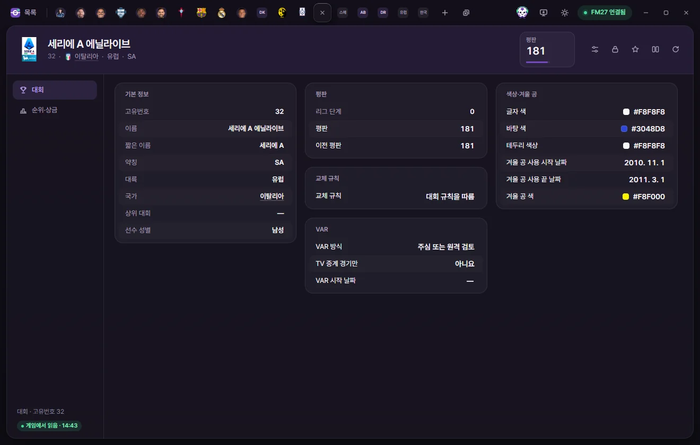
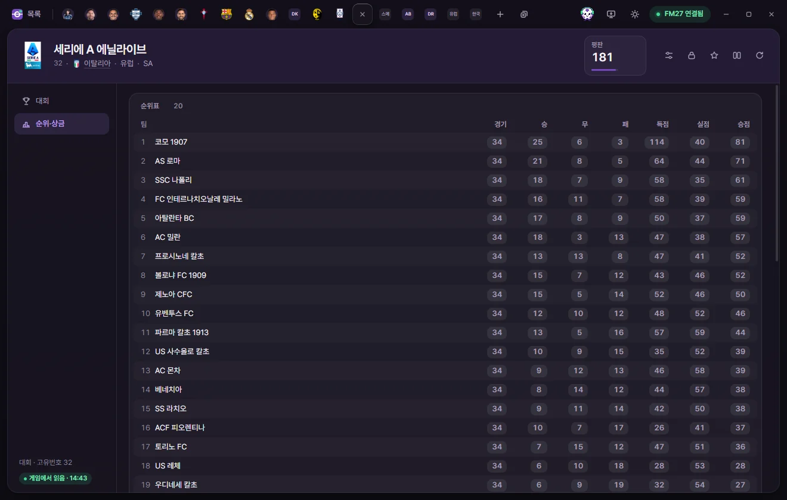

편집 탭
대회
리그·컵 대회의 평판, 교체 규칙, VAR, 대회 색과 겨울 공을 고치고, 리그 순위표와 순위별 상금, 컵 라운드 상금을 고치는 방법입니다.


탭 여는 법
대회 목록에서 이름을 누릅니다. 팀 탭의 리그·디비전·대륙 대회처럼 밑줄로 보이는 대회 이름을 눌러도 열립니다. 값 고치기와 저장은 선수 탭과 같습니다. 선수 페이지의 공통 설명
탭 머리
- 이름 아래에 고유번호, 국가, 대륙, 약칭이 보입니다.
- 숫자 카드는 평판(0~200) 하나입니다. 눌러서 바로 숫자를 칩니다.
- 오른쪽 단추는 프리셋, 고정, 즐겨찾기, 비교, 게임에서 다시 읽기입니다. 대회 탭에는 ⚡ 단추가 없습니다.
하위 페이지는 대회와 순위·상금 2개입니다.
대회
기본 정보
모두 보기만 합니다. 고유번호, 이름, 짧은 이름, 약칭, 대륙, 국가, 상위 대회, 선수 성별(대회에 나오는 선수들의 성별)이 있습니다. 국가와 상위 대회는 누르면 그 탭이 열립니다.
평판
| 칸 | 하는 일 | 고칠 수 있는 범위 |
|---|---|---|
| 평판 | 대회 평판 | 0~200 |
| 이전 평판 | 대회의 이전 평판. 값이 없는 대회는 255(없음)입니다 | 0~254 |
| 리그 단계 | 0은 최상위, 100은 해당 없음으로 보입니다 | 보기만 |
교체 규칙
| 칸 | 하는 일 | 고칠 수 있는 범위 |
|---|---|---|
| 교체 규칙 | '후보 7명 중 5명 교체', '후보 9명 중 5명 교체, 교체 기회 최대 3번'처럼 70여 가지와 '대회 규칙을 따름' | 선택지 |
VAR
| 칸 | 하는 일 | 고칠 수 있는 범위 |
|---|---|---|
| VAR 방식 | 주심 검토, 원격 검토, 주심 또는 원격 검토, 알 수 없는 방식, VAR 없음 | 선택지 |
| TV 중계 경기만 | VAR을 TV 중계 경기에만 쓰는지 | 예, 아니요 |
| VAR 시작 날짜 | 날짜가 없는 대회도 있습니다. 날짜가 없을 때의 뜻은 확인하지 않았습니다 | 날짜 |
VAR 설정이 있는 대회에만 값이 있고, 없는 대회에 새로 만들지는 않습니다. 바꾼 방식이 경기에 언제부터 쓰이는지는 게임에서 확인하지 않았습니다.
색상·겨울 공
| 칸 | 하는 일 | 고칠 수 있는 범위 |
|---|---|---|
| 글자 색, 바탕 색, 테두리 색상 | 대회를 보여 줄 때 쓰는 색 | 색 |
| 겨울 공 사용 시작 날짜, 끝 날짜 | 겨울 공을 쓰는 대회에만 날짜가 있습니다 | 날짜 |
| 겨울 공 색 | 색 |
순위·상금


대회의 첫 단계가 리그인지 컵인지에 따라 다른 목록이 보입니다. 여러 단계로 된 대회는 첫 단계만 보입니다.
순위표
리그 순위표의 수치입니다. 줄 순서가 게임의 순위이고, 앞에 순위 번호가 붙습니다. 숫자를 눌러 고칩니다.
| 칸 | 고칠 수 있는 범위 |
|---|---|
| 팀 | 보기만 |
| 경기, 승, 무, 패 | 0~255 |
| 득점, 실점 | 0~999 |
| 승점 | −99~999 |
순위별 상금
리그 상금 가운데 최종 순위별 상금입니다. 위에서부터 1위, 2위 순서이고, 게임이 정한 순위까지만 있습니다. 금액을 눌러 고칩니다(0~20억 파운드). 승·무·패마다 주는 상금은 아직 찾지 못해서 여기에 없습니다.
컵 라운드
첫 단계가 컵인 대회는 라운드마다 라운드 이름, 추첨일, 시작일, 팀 수, 이긴 팀 상금, 진 팀 상금, 출전 수당이 보입니다.
- 이긴 팀 상금·진 팀 상금은 그 라운드에서 이긴 팀·진 팀이 받는 돈이고, 출전 수당은 나오기만 해도 받는 돈입니다.
- 세 금액은 값이 정해진 칸만 눌러서 고칠 수 있습니다(0~20억 파운드). '없음'은 게임이 정하지 않은 값입니다.
- 라운드 이름, 날짜, 팀 수는 보기만 합니다.